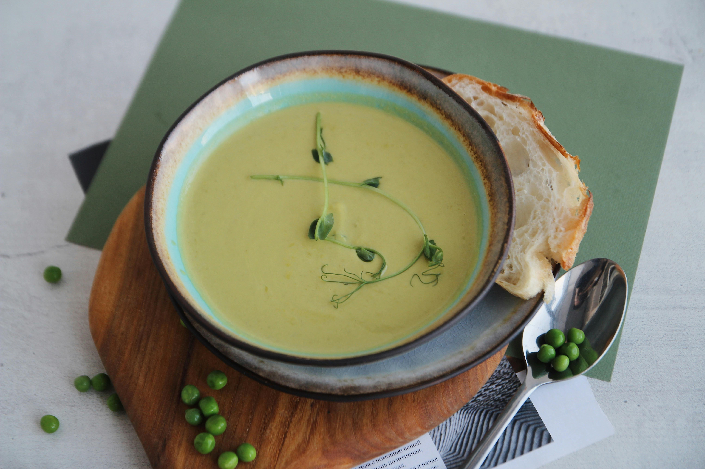

Home
Pea Soup

Description
This soup is known in France as Potage Saint-Germain, a suburb in Paris.
This recipe is a simple, healthy, and tasty treat and is best served with
a side of bread and a garnish of shallots, and a cool -- not cold --
glass of water.
Ingredients
- 2 tablespoons butter
- 2 medium shallots, finely chopped
- 2 cups water
- 3 cups fresh shelled green peas
- salt and pepper to taste
- 3 tablespoons whipping cream (Optional)
Steps
- Melt the butter in a heavy-bottomed saucepan over medium heat.
- Cook the shallots until soft and translucent, about 3 minutes.
- Pour in the water and peas, season to taste with salt and pepper.
- Increase the heat to medium-high and bring to a boil
- then reduce heat to low, cover, and simmer until the peas are
tender, 12 to 18 minutes.
- Puree the peas in a blender or food processor in batches.
- Strain back into the saucepan, stir in the cream if using, and reheat.
- Season to taste with salt and pepper before serving.